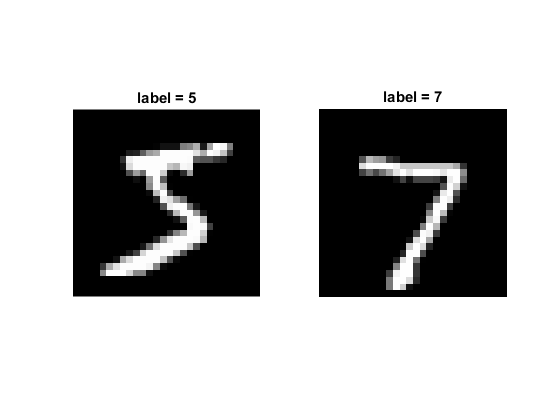
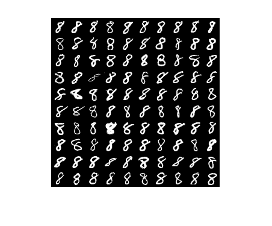

The MNIST dataset of handwritten digits
Demonstrates loading the MNIST dataset.
Sources:
Contents
MNIST dataset
download/extract files if needed
dirMNIST = fullfile(mexopencv.root(), 'test', 'mnist'); if ~isdir(dirMNIST) % download baseURL = 'http://yann.lecun.com/exdb/mnist/'; files = { 'train-images-idx3-ubyte.gz' 'train-labels-idx1-ubyte.gz' 't10k-images-idx3-ubyte.gz' 't10k-labels-idx1-ubyte.gz' }; disp('Downloading MNIST database, and extracting files...'); mkdir(dirMNIST); for i=1:numel(files) gzFile = fullfile(dirMNIST, files{i}); if exist(gzFile, 'file') ~= 2 url = [baseURL, files{i}]; urlwrite(url, gzFile); end %HACK: unfortunately MATLAB's gunzip (with Java's GZIPInputStream) % ignore the stored filename when extracting a GZ file, instead they % simply remove the .gz extension! So we use Apache Commons to get the % original filename (a Java library that ships with MATLAB). % Alternatively we could use system tools like GNU gunzip or 7zip. if false gunzip(gzFile, dirMNIST); elseif false system(['gunzip --keep --name ' gzFile]); else % adapted from gunzip.m in = org.apache.commons.compress.compressors.gzip.GzipCompressorInputStream(... java.io.FileInputStream(java.io.File(gzFile))); fname = char(in.getMetaData().getFilename()); if isempty(fname) [~,fname,~] = fileparts(gzFile); end out = java.io.FileOutputStream(java.io.File(fullfile(dirMNIST, fname))); %org.apache.commons.io.IOUtils.copy(in, out); streamCopier = com.mathworks.mlwidgets.io.InterruptibleStreamCopier.getInterruptibleStreamCopier(); streamCopier.copyStream(in, out); in.close(); out.close(); clear in out streamCopier fname end end end
Load dataset from disk
we give the path to the extracted files to the load method
tic ds = cv.Dataset('OR_mnist'); ds.load(fullfile(dirMNIST,'/')); %HACK: path must end with a slash! toc
Elapsed time is 0.431709 seconds.
Data
dataset contains for each object its image and label as a structure array of images (8-bit 28x28 grayscale) and corresponding labels (0..9)
fprintf('NumSplits = %d\n', ds.getNumSplits()); dtrain = ds.getTrain() dtest = ds.getTest() whos dtrain dtest
NumSplits = 1
dtrain =
1×60000 struct array with fields:
label
image
dtest =
1×10000 struct array with fields:
label
image
Name Size Bytes Class Attributes
dtest 1x10000 10160128 struct
dtrain 1x60000 60960128 struct
Display
show one instance from each train/test sets
subplot(121), imshow(dtrain(1).image) title(sprintf('label = %d',dtrain(1).label)) subplot(122), imshow(dtest(1).image) title(sprintf('label = %d',dtest(1).label))
Display
show a sample of the first 100 train images corresponding to digit 8
if mexopencv.require('images') idx = find([dtrain.label] == 8); idx(101:end) = []; figure, montage(cat(4, dtrain(idx).image)) end